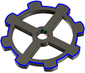

Tous les contours
fermés sélectionnés
Contours fermés
externes sélectionnés
Contours fermés
internes sélectionnés
Cette option est utilisée avec la sélection de face pour filtrer les chaînes intérieures et extérieures.
|
 |
|
Tous les contours |
Contours fermés |
Contours fermés |
REMARQUE: il peut être bénéfique de sélectionner toutes les limites internes pour une trajectoire d'outil unique et les limites externes pour une autre trajectoire d'outil. Cela vous permet de mieux contrôler le dégagement du perçage et les valeurs d'entrée/sortie pour chacune d'elles.